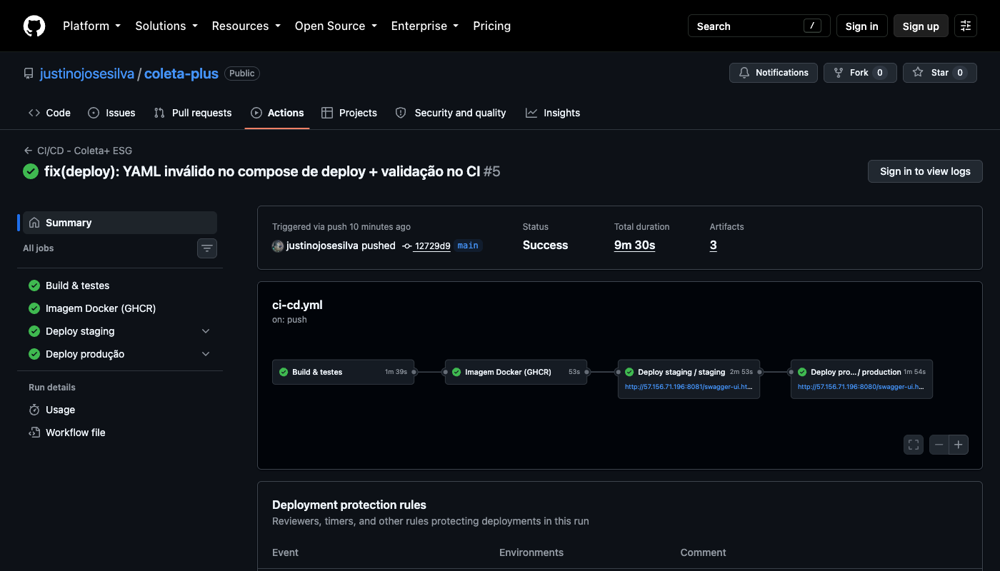
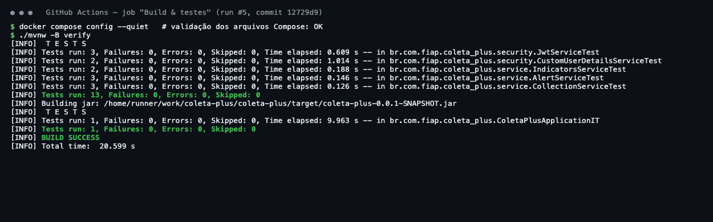
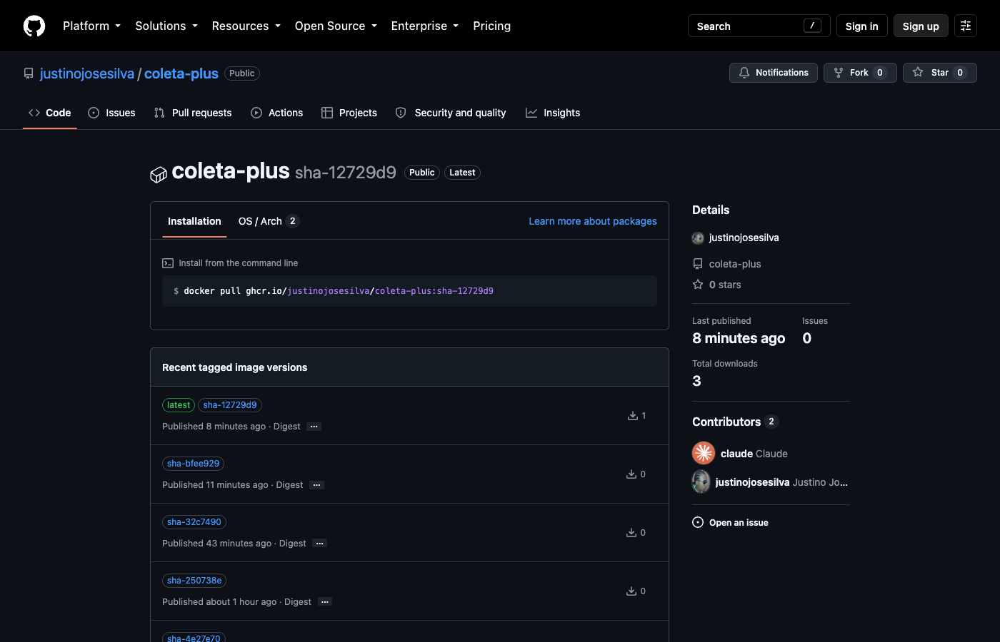
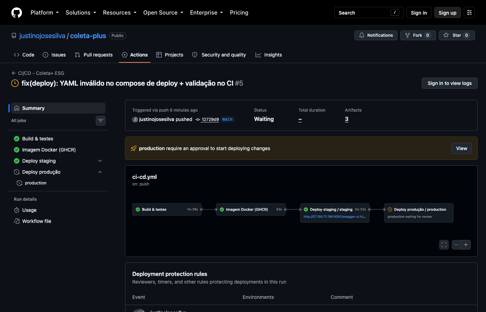
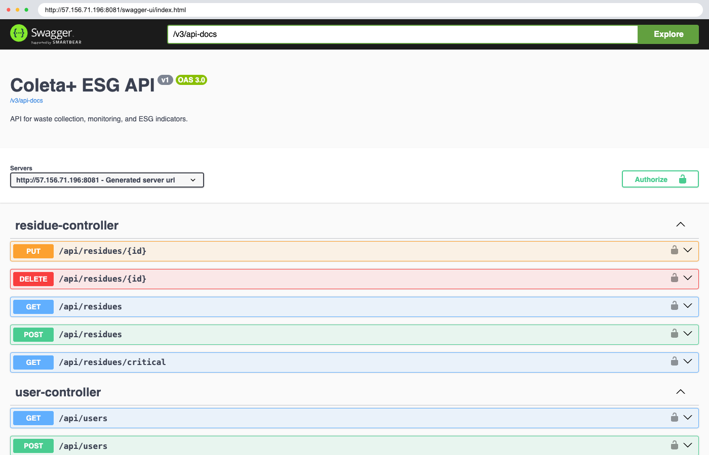
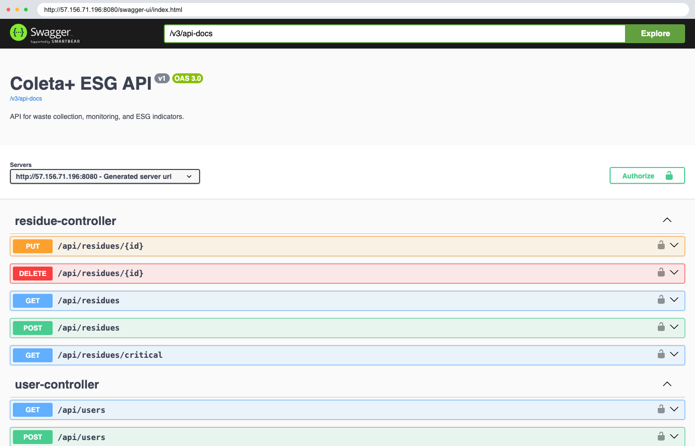
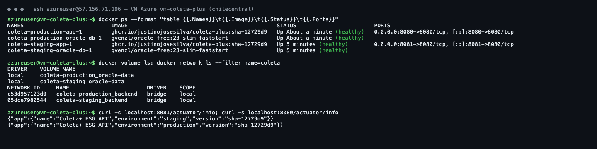
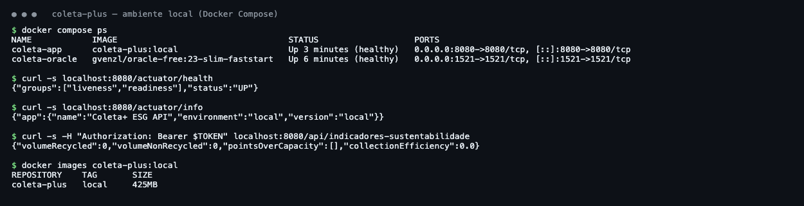

| Integrante | [Seu nome — RM] |
| Stack | Java 21 · Spring Boot 4 · Oracle 23 Free |
| DevOps | GitHub Actions · Docker · Docker Compose · GHCR · Azure |
| Repositório | github.com/justinojosesilva/coleta-plus |
O Coleta+ é uma API REST de gestão de resíduos em pontos de coleta urbanos: registra resíduos e coletas, gera alertas automáticos quando um ponto atinge 90% da capacidade e calcula indicadores ESG (volume reciclado, pontos sobrecarregados e eficiência de coleta). Nesta fase o projeto passou a ter um ciclo de vida totalmente automatizado, do commit até a produção.
| Ferramenta | Papel |
|---|---|
| GitHub Actions | Orquestra o pipeline (.github/workflows/ci-cd.yml + workflow reutilizável deploy.yml). |
| Maven + JUnit 5 + Mockito | Build e testes: Surefire para os unitários e Failsafe para os de integração. |
| Oracle 23 Free (service container) | Banco real usado pelo teste de integração dentro do runner. |
| Docker Buildx + GHCR | Gera a imagem e publica no GitHub Container Registry. |
| GitHub Environments | staging e production, com secrets próprios; produção exige aprovação manual e só aceita a branch main. |
| Azure Virtual Machine | Ubuntu 24.04 (Standard_B2as_v2) com Docker; hospeda os dois ambientes isolados. |
sha-xxxxxxxmain executa o fluxo completo; pull requests executam só build e testes, validando a mudança antes do merge. Também pode ser disparado manualmente../mvnw verify. Os testes unitários cobrem regras de negócio (baixa de estoque na coleta, alerta de capacidade de 90%, cálculo de eficiência ESG), geração/validação de JWT e mapeamento de papéis. O teste de integração sobe a aplicação inteira contra um Oracle real, roda as migrations do Flyway e valida com ddl-auto=validate que todas as entidades batem com o schema. Relatórios e o .jar ficam como artefatos.<ambiente>.env a partir dos secrets do environment, copia os arquivos por SSH para a VM e executa deploy/deploy.sh, que faz docker compose pull + up -d e aguarda o container ficar healthy./actuator/health, confere em /actuator/info se o ambiente e a versão são os esperados, faz login e consulta os indicadores ESG. Qualquer falha interrompe o fluxo e produção não é liberada.ghcr.io/justinojosesilva/coleta-plus:sha-xxxxxxx → acessa a VM via SSHcoleta-staging
backend · volume oracle-datacoleta-production
backend · volume oracle-dataCada ambiente é um projeto Docker Compose independente, com rede, volume e banco próprios. Um deploy em staging nunca afeta os dados de produção. A API encontra o banco pelo nome do serviço (oracle-db) na rede interna e só sobe quando o healthcheck do banco passa (depends_on: service_healthy).
# Estágio 1: build (JDK + Maven), não vai para produção
FROM maven:3.9-eclipse-temurin-21 AS build
WORKDIR /workspace
COPY pom.xml mvnw ./
COPY .mvn .mvn
RUN ./mvnw -B -q dependency:go-offline # camada de dependências em cache
COPY src src
RUN ./mvnw -B -q -DskipTests package && cp target/coleta-plus-*.jar app.jar
# Estágio 2: runtime (somente JRE)
FROM eclipse-temurin:21-jre
RUN groupadd --system app && useradd --system --gid app --home /app app
WORKDIR /app
COPY --from=build --chown=app:app /workspace/app.jar app.jar
USER app # processo sem root
ENV JAVA_OPTS="-XX:MaxRAMPercentage=75 -XX:+ExitOnOutOfMemoryError"
EXPOSE 8080
HEALTHCHECK --interval=15s --timeout=5s --start-period=90s --retries=5 \
CMD curl -fs http://localhost:8080/actuator/health || exit 1
ENTRYPOINT ["sh", "-c", "exec java $JAVA_OPTS -jar /app/app.jar"]
| Item | Valor |
|---|---|
| Registry / nome | ghcr.io/justinojosesilva/coleta-plus |
| Tags | sha-<commit> (imutável, usada nos deploys) e latest |
| Base de runtime | eclipse-temurin:21-jre (Ubuntu) |
| Tamanho | ~425 MB (só JRE + .jar; o estágio de build com JDK/Maven fica de fora) |
| Usuário | app (não-root) |
| Healthcheck | /actuator/health (inclui conexão com o banco) |
| Comando | Finalidade |
|---|---|
cp .env.example .env | Criar a configuração local |
docker compose up -d --build | Compilar a imagem e subir app + banco localmente |
docker compose ps / logs -f app | Ver status (healthy) e logs |
docker compose down -v | Derrubar o ambiente e apagar o volume |
docker build -t coleta-plus:local . | Build manual da imagem |
docker compose -p coleta-staging -f docker-compose.deploy.yml --env-file staging.env up -d | Deploy de um ambiente na VM (executado pelo deploy.sh) |
./infra/create-azure-vm.sh | Criar a VM no Azure com Docker (cloud-init) |








CustomUserDetailsService registrava a permissão como ADMIN, mas @PreAuthorize("hasRole('ADMIN')") procura ROLE_ADMIN. Solução: prefixar ROLE_ na authority e criar um teste unitário de regressão.ORA-00942: a entidade Collection usava a tabela collections, mas a migration cria TB_COLLECTIONS. Solução: corrigir o mapeamento e fazer o teste de integração rodar com ddl-auto=validate. Agora qualquer divergência entre entidades e migrations quebra o pipeline antes do deploy (o teste falha com missing table).contextLoads) exigia um Oracle acessível, o que inviabilizava o CI. Solução: separar testes unitários (Mockito, sem banco, rodam no mvn test) de testes de integração (*IT.java, via Failsafe) e usar um service container Oracle 23 Free no GitHub Actions.${JWT.SECRET:fiap}, então a variável JWT_SECRET definida no container nunca era lida e todos os ambientes usavam o segredo padrão. Solução: corrigir para ${JWT_SECRET:fiap} e injetar segredos diferentes por ambiente.az vm deallocate.docker compose up retorna sucesso mesmo que a aplicação caia logo depois. Solução: Spring Boot Actuator + HEALTHCHECK no Dockerfile; o deploy.sh espera o status healthy (e imprime os logs se falhar), e o pipeline confirma ambiente/versão via /actuator/info.eastus para a assinatura de estudante (apenas regiões permitidas por policy). A VM foi criada em chilecentral com Standard_B2as_v2. Os acentos nos comentários do cloud-init.yml corromperam o YAML enviado e o Docker não foi instalado, então o arquivo passou a ser só ASCII. Por fim, o primeiro deploy em staging falhou porque um texto de ajuda (ex.: ...) dentro de ${IMAGE:?...} quebrava o YAML do compose de deploy. Solução: correção da mensagem e uma nova etapa no pipeline que valida os dois arquivos Compose com docker compose config antes do build.| Item | OK |
|---|---|
| Projeto compactado em .ZIP com estrutura organizada | ☑ |
| Dockerfile funcional | ☑ |
| docker-compose.yml ou arquivos Kubernetes | ☑ |
| Pipeline com etapas de build, teste e deploy | ☑ |
| README.md com instruções e prints | ☑ |
| Documentação técnica com evidências (PDF ou PPT) | ☑ |
| Deploy realizado nos ambientes staging e produção | ☑ |
coleta-plus/ ├── Dockerfile ├── docker-compose.yml # ambiente local (app + Oracle) ├── .env.example ├── deploy/ │ ├── docker-compose.deploy.yml # staging e produção (imagem do GHCR) │ ├── deploy.sh # executado na VM pelo pipeline │ ├── staging.env.example │ └── production.env.example ├── infra/ │ ├── create-azure-vm.sh # cria a VM no Azure │ └── cloud-init.yml # instala Docker na VM ├── .github/workflows/ │ ├── ci-cd.yml # build → testes → imagem → staging → produção │ └── deploy.yml # deploy reutilizável por ambiente ├── src/ # código-fonte + testes ├── docs/ # esta documentação + prints └── README.md